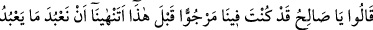
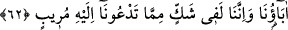
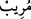
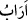

Köprü, cami, han ve misafirhâneler
Kim ki ardından bırakmaz yâdigâr
Onun vücudunun ağacı meyve vermez
Hayır eseri olmadan bu âlemden eğer giderse bir kimse
Layık değildir öldükten sonra ona Fâtiha okuma
62. Dediler ki: “Ey Salih, sen bundan önce içimizde ümit beslenen birisiydin.
(Şimdi) atalarımızın taptığı şeylere tapmaktan bizi men mi ediyorsun? Doğrusu biz
senin bizi kendisine çağırdığın şeyden ciddi bir şüphe içindeyiz.”
Salih (a.s.) kendilerini Allah’a ve O’na kulluk etmeye çağırmasından sonra kavmi
“dediler ki: “Ey Salih, sen bundan” yani bizi buna çağırmadan “önce içimizde ümit
beslenen birisiydin.” Seninle ilgili güzel düşünceler taşıdığımız; olgunluk ve doğruluk
belirtileri gördüğümüz için her konuda faydalanacağımız, görüşlerine başvuracağımız,
irşadlarına göre hareket edeceğimiz bir efendi olmanı umuyorduk. Fakat senin bu
sözlerini duyunca bütün ümidlerimiz suya düştü ve sende bir hayır olmadığını anladık.
Nitekim bazı inkâr ehli, müridlik ve taleb yoluna giren kimselere: “Bu da bozuldu,
hatta delirdi. Önceden akıllı, sâlih biriydi. Artık bundan hayır gelmez.” gibi sözler
sarfederler.
Mesnevî’de şöyle denilir:
Cüz’î akıl aşkı inkâr eder
Her ne kadar sırra sâhip görünse de
Hâfız der ki:
Aşk gedâlarını hakir görme çünkü bu topluluk
Murassa kemersiz pâdişahlar ve murassa taçsız hüsrevlerdir
Tek renk derd çekenlerin himmetinin kölesiyim
Mavi ridalı, kara gönüllü topluluğun himmetinin kölesi değil
Şimdi “atalarımızın taptığı şeylere tapmaktan bizi men mi ediyorsun? Doğrusu biz
senin bizi kendisine çağırdığın” Allah’ı tek kabul etme ve putlara tapmayı bırakma gibi
“şeyden” dolayı “ciddi bir şüphe” yani kararsızlık ve kalp huzursuzluğu “içindeyiz.”
Öyle bir şey ki nefsi muztarip eder, gönüle huzur vermez, aklı kararsız kılar.
“
” kelimesi, ‘birini şüpheye düşürdü’ mânâsındaki “
” kökündendir. Âyette
“kuşkuya düşürme” fiilinin şüpheye isnad edilmesi mecâzî bir anlam taşımaktadır.